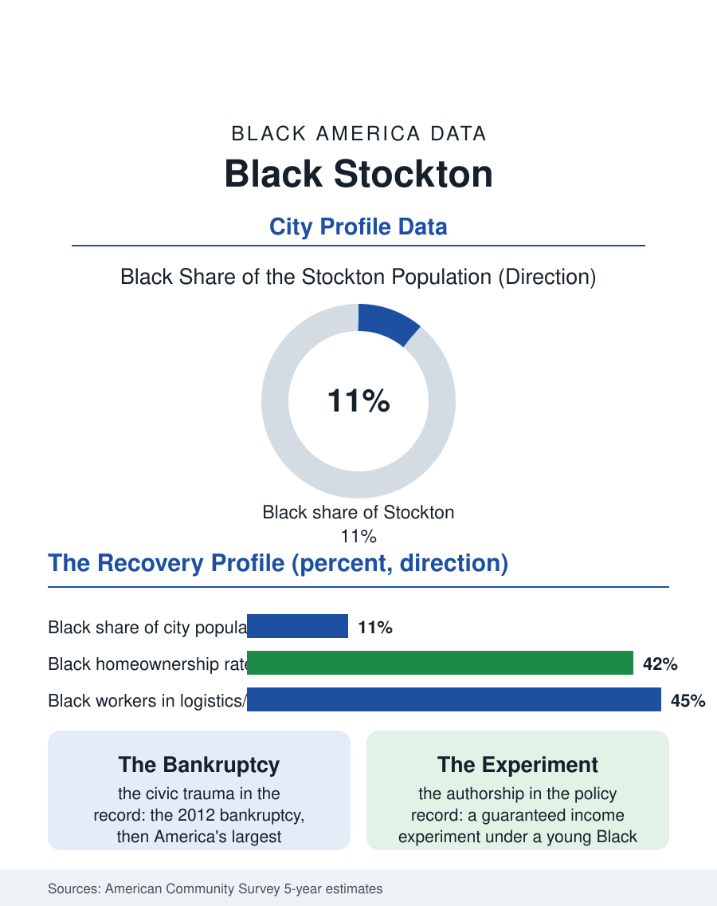

Black Cities
After the Bankruptcy: Black Stockton
A port and farm community of forty thousand that survived America's largest municipal bankruptcy and authored a national income experiment. The Stockton file.

Stockton's Black community, roughly forty thousand people in a San Joaquin County metropolis of about eight hundred thousand, around eleven percent of the city of Stockton itself, is one of California's most consequential smaller Black populations: a port and farm city community that endured municipal bankruptcy, built a mayor's office and a movement, and sits at the valley's northern gate between the Bay Area's prices and the interior's space. This article reads the Stockton file.
Port, Farms, and the South Side
Stockton's Black history runs through the inland port, the deepest water port in the valley, and the delta farms whose asparagus, tomato, and cherry harvests employed Black workers from the migration's western streams, families from Texas, Louisiana, Arkansas, and Oklahoma who settled in the south side neighborhoods, Boggs Tract, Conway, the districts south of the crosstown whose names organize the community's geography. The wartime shipyards and the naval supply depot industrialized the settlement, and the postwar community built the classic institutional set under the era's constraints: the churches along the south side corridors, the Edison High tradition, a Black business district along its commercial streets, and a political organization that matured, as in the valley's other files, through the school board and the council district map. Stockton's late twentieth century was hard on every community in it: the farm economy mechanized, the depot closed, downtown hollowed, and the city's 2012 bankruptcy, then the largest municipal failure in American history, cut the public services and pensions on which the Black middle class disproportionately depended, a civic trauma the file records as this community's defining modern event, out of which came an unusual political chapter, a young Black mayor elected on a reform and basic-income experimentation platform that drew the world's attention to Stockton's experiment with guaranteed income for its residents.
The Numbers in the Recovery
The American Community Survey's profile tracks the slow reconstruction. Median Black household income runs below the valley's coastal-fed metros and has recovered unevenly since the bankruptcy, employment concentrating in health care, the hospitals and the county system, logistics, the port and the warehouse economy that the interstate corridor has made the region's growth industry, education, and the public sector whose bankruptcy-era wounds are the file's scar tissue. Homeownership presents the California interior's two-sided figure: Black ownership rates trail the citywide figure while the price level, a fraction of the Bay Area's ninety minutes away, sustains an inflow of Black households from the coast that the migration data register steadily, families trading the commute for the deed and redrawing the community's composition toward the equity-bearing newcomer. Poverty rates remain the valley's, elevated against the state, and the health file carries the delta's burdens, asthma and the valley fever of the agricultural counties, inside a hospital system that anchors employment and access simultaneously. The University of the Pacific and the community college district carry the credential pipeline, with the city's HBCU-adjacent tradition running through its churches and its Delta Sigma and Divine Nine networks.
The Experiment's Hometown
Stockton's national identity, unusually for a city its size, was authored substantially by its Black community in the last decade: the guaranteed income experiment, run under a Black mayor with philanthropic funding, produced income and wellbeing data that entered the national policy record permanently, whatever its scale's limits, and its author became a national figure of the young Black municipal leadership generation. The file balances the fame against the ground truth the surveys keep: the experiment's hundreds of recipients against the community's forty thousand, the downtown's revival against the south side's grocery and retail deserts, the port's automation against the warehouse economy's wage floor. The community's institutions have metabolized harder decades than this one: the churches and the Edison alumni, the NAACP chapter of long standing, the Juneteenth tradition in the park, constitute the permanent government beneath the headlines. Stockton's Black population, a tenth or more of the city and growing with the coastal exodus, has survived the valley's mechanization, the depot's closure, and its own city's bankruptcy, and now negotiates with the logistics era from ground it never left. The Stockton file closes on that durability, which the national experiment, for all its data, merely sampled: a community that has been the subject of America's attention before, in the bankruptcy court and the pilot study alike, and intends, on the evidence of its institutions, to be the author of the next chapter itself.
More in Black Cities
Black Atlanta: Population, Distribution, and Growth of a Black Metropolis
Metro Atlanta holds more than two million Black residents — roughly one in three, second only to New York. The suburban distribution, migration history, and composition of Black Atlanta in the census data.
Black New York: The Largest Black Population in America
The New York metropolitan area holds about 3.4 million Black residents — more than any metro in the nation — and the city itself about two million. The census profile.
Black Washington: The District and the Metro
The Washington metro holds about 1.6 million Black residents, and the District itself — long a majority-Black city — now records a Black share near 41 percent. The census profile.
Source: U.S. Census Bureau, American Community Survey 5-year estimates for Stockton, CA; San Joaquin County historical records.